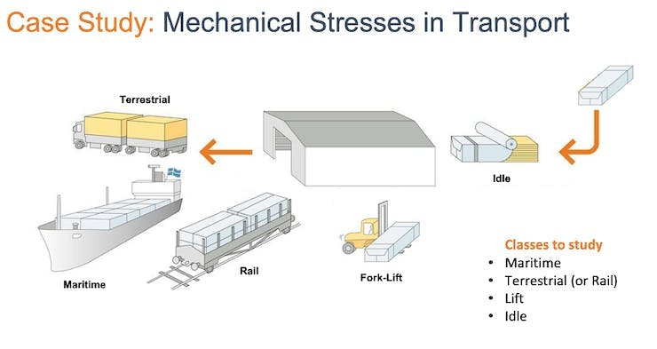
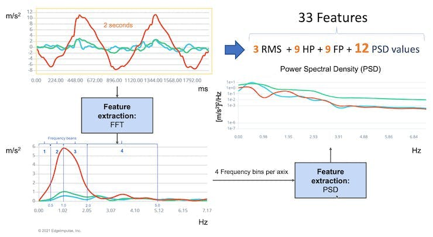
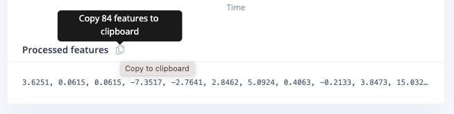

Blocco delle Feature Spettrali DSP
Introduzione
I progetti TinyML correlati al movimento (o alle vibrazioni) coinvolgono dati da IMU (solitamente accelerometri e giroscopi). Questi dataset di tipo temporale dovrebbero essere pre-elaborati prima di inserirli in un training di modello di apprendimento automatico, che è un’area impegnativa per l’apprendimento automatico embedded. Tuttavia, Edge Impulse aiuta a superare questa complessità con la sua fase di pre-elaborazione dell’elaborazione del segnale digitale (DSP) e, più specificamente, il Spectral Features Block per i sensori inerziali.
Ma come funziona internamente? Analizziamolo nel dettaglio.
Estrazione delle Feature di Revisione
L’estrazione di feature [caratteristiche] da un dataset catturato con sensori inerziali, come gli accelerometri, comporta l’elaborazione e l’analisi dei dati grezzi. Gli accelerometri misurano l’accelerazione di un oggetto lungo uno o più assi (in genere tre, indicati come X, Y e Z). Queste misure possono essere utilizzate per comprendere vari aspetti del movimento dell’oggetto, come pattern di movimento e vibrazioni. Ecco una panoramica di alto livello del processo:
Raccolta dati: Per prima cosa, dobbiamo raccogliere i dati dagli accelerometri. A seconda dell’applicazione, i dati possono essere raccolti a diverse frequenze di campionamento. È essenziale assicurarsi che la frequenza di campionamento sia sufficientemente alta da catturare le dinamiche rilevanti del movimento studiato (la frequenza di campionamento dovrebbe essere almeno il doppio della massima frequenza presente nel segnale).
Pre-elaborazione dei dati: I dati grezzi dell’accelerometro possono essere rumorosi e contenere errori o informazioni irrilevanti. I passaggi di pre-elaborazione, come il filtraggio e la normalizzazione, possono aiutare a pulire e standardizzare i dati, rendendoli più adatti all’estrazione di feature.
Studio non esegue la normalizzazione o la standardizzazione, quindi a volte, quando si lavora con Sensor Fusion [gruppi di sensori], potrebbe essere necessario eseguire questo passaggio prima di caricare i dati in Studio. Ciò è particolarmente cruciale nei progetti di gruppi di sensori, come visto in questo tutorial, Sensor Data Fusion with Spresense and CommonSense.
Segmentazione: A seconda della natura dei dati e dell’applicazione, potrebbe essere necessario dividere i dati in segmenti più piccoli o finestre. Ciò può aiutare a concentrarsi su eventi o attività specifici all’interno del dataset, rendendo l’estrazione di feature più gestibile e significativa. La scelta della window size [dimensione della finestra] e della sovrapposizione (window span) dipende dall’applicazione e dalla frequenza degli eventi di interesse. Come regola generale, dovremmo provare a catturare un paio di “cicli di dati”.
Estrazione delle feature: Una volta che i dati sono stati pre-elaborati e segmentati, è possibile estrarre feature che descrivono le caratteristiche del movimento. Alcune feature tipiche estratte dai dati dell’accelerometro includono:
- Le feature del Time-domain descrivono le proprietà statistiche dei dati all’interno di ciascun segmento, come media, mediana, deviazione standard, asimmetria, curtosi e tasso di attraversamento dello zero.
- Le feature Frequency-domain si ottengono trasformando i dati nel dominio della frequenza utilizzando tecniche come la Fast Fourier Transform (FFT). Alcune feature tipiche del dominio della frequenza includono lo spettro di potenza, l’energia spettrale, le frequenze dominanti (ampiezza e frequenza) e l’entropia spettrale.
- Le feature del dominio Time-frequency combinano le informazioni del dominio del tempo e della frequenza, come la Short-Time Fourier Transform (STFT) o la Discrete Wavelet Transform (DWT). Possono fornire una comprensione più dettagliata di come il contenuto di frequenza del segnale cambia nel tempo.
In molti casi, il numero di feature estratte può essere elevato, il che può portare a un overfitting o a una maggiore complessità computazionale. Le tecniche di selezione delle feature, come le informazioni reciproche, i metodi basati sulla correlazione o l’analisi delle componenti principali (PCA), possono aiutare a identificare le feature più rilevanti per una determinata applicazione e ridurre la dimensionalità del dataset. Studio può aiutare con tali calcoli rilevanti per le feature.
Esploriamo più in dettaglio un tipico progetto di classificazione del movimento TinyML trattato in questa serie di esercitazioni pratiche.
Un progetto TinyML di Motion Classification
Nel progetto, Motion Classification and Anomaly Detection, abbiamo simulato sollecitazioni meccaniche nel trasporto, dove il nostro problema era classificare quattro classi di movimento:
- Maritime (Pallet in navi)
- Terrestrial (pallet in un Camion o Treno)
- Lift [Sollevamento] (pallet movimentati da Carrello elevatore)
- Idle (pallet in Magazzini)
Gli accelerometri hanno fornito i dati sul pallet (o il container).

Di seguito è riportato un campione (dati grezzi) di 10 secondi, acquisito con una frequenza di campionamento di 50 Hz:
Il risultato è simile quando questa analisi viene eseguita su un altro set di dati con lo stesso principio, utilizzando una frequenza di campionamento diversa, 62.5Hz invece di 50Hz.
Pre-elaborazione dei Dati
I dati grezzi acquisiti dall’accelerometro (dati di “serie temporali”) devono essere convertiti in “dati tabellari” utilizzando uno dei tipici metodi di estrazione delle feature descritti nell’ultima sezione.
Dovremmo segmentare i dati utilizzando una finestra scorrevole sui dati campione per l’estrazione delle feature. Il progetto ha acquisito i dati dell’accelerometro ogni 10 secondi con una frequenza di campionamento di 62.5 Hz. Una finestra di 2 secondi acquisisce 375 punti dati (3 assi x 2 secondi x 62.5 campioni). La finestra scorre ogni 80 ms, creando un dataset più grande in cui ogni istanza ha 375 “feature grezze”.
Su Studio, la versione precedente (V1) dello Spectral Analysis Block estraeva come caratteristiche del dominio del tempo solo l’RMS e, per il dominio della frequenza, i picchi e la frequenza (utilizzando FFT) e le caratteristiche di potenza (PSD) del segnale nel tempo, risultando in un set di dati tabellari fisso di 33 caratteristiche (11 per ogni asse),

Quelle 33 feature erano il tensore di input di un classificatore di reti neurali.
Nel 2022, Edge Impulse ha rilasciato la versione 2 dello Spectral Analysis block, che esploreremo qui.
Edge Impulse - Spectral Analysis Block V.2 funzionamento
Nella Versione 2, le caratteristiche statistiche del dominio del tempo per asse/canale sono:
- RMS
- Skewness
- Kurtosis
E le caratteristiche spettrali del dominio della frequenza per asse/canale sono:
- Spectral Power [Potenza spettrale]
- Skewness [asimmetria] (nella prossima versione)
- Curtosi (nella prossima versione)
In questo link possiamo avere maggiori dettagli sull’estrazione delle feature.
Clonare il progetto pubblico. Si può anche seguire la spiegazione, giocando col codice usando il mio Google CoLab Notebook: Edge Impulse Spectral Analysis Block Notebook.
Si inizia importando le librerie:
import numpy as np
import matplotlib.pyplot as plt
import seaborn as sns
import math
from scipy.stats import skew, kurtosis
from scipy import signal
from scipy.signal import welch
from scipy.stats import entropy
from sklearn import preprocessing
import pywt
plt.rcParams['figure.figsize'] = (12, 6)
plt.rcParams['lines.linewidth'] = 3Dal progetto studiato, scegliamo un campione di dati dagli accelerometri come di seguito:
- Dimensione della finestra di 2 secondi:
[2,000]ms - Frequenza di campionamento:
[62.5]Hz - Sceglieremo il filtro
[None](per semplicità) e una - Lunghezza FFT:
[16].
f = 62.5 # Hertz
wind_sec = 2 # seconds
FFT_Lenght = 16
axis = ['accX', 'accY', 'accZ']
n_sensors = len(axis)Selezionando Raw Features nella scheda Studio Spectral Analysis, possiamo copiare tutti i 375 punti dati di una particolare finestra di 2 secondi negli appunti.
Incollare i punti dati in una nuova variabile data:
data=[-5.6330, 0.2376, 9.8701, -5.9442, 0.4830, 9.8701, -5.4217, ...]
No_raw_features = len(data)
N = int(No_raw_features/n_sensors)Le feature grezze totali sono 375, ma lavoreremo con ogni asse singolarmente, dove N= 125 (numero di campioni per asse).
Vogliamo capire come Edge Impulse ottiene le feature elaborate.
Quindi, si devono anche incollare le feature elaborate su una variabile (per confrontare le feature calcolate in Python con quelle fornite da Studio):
features = [2.7322, -0.0978, -0.3813, 2.3980, 3.8924, 24.6841, 9.6303, ...]
N_feat = len(features)
N_feat_axis = int(N_feat/n_sensors)Il numero totale di feature elaborate è 39, il che significa 13 feature/asse.
Osservando attentamente queste 13 feature, ne troveremo 3 per il dominio del tempo (RMS, Skewness e Kurtosis):
[rms] [skew] [kurtosis]
e 10 per il dominio della frequenza (ci torneremo più avanti).
[spectral skew][spectral kurtosis][Spectral Power 1] ... [Spectral Power 8]
Suddivisione dei dati grezzi per sensore
I dati hanno campioni da tutti gli assi; dividiamoli e tracciamo un grafico separatamente:
def plot_data(sensors, axis, title):
[plt.plot(x, label=y) for x,y in zip(sensors, axis)]
plt.legend(loc='lower right')
plt.title(title)
plt.xlabel('#Sample')
plt.ylabel('Value')
plt.box(False)
plt.grid()
plt.show()
accX = data[0::3]
accY = data[1::3]
accZ = data[2::3]
sensors = [accX, accY, accZ]
plot_data(sensors, axis, 'Raw Features')Sottrazione della media
Successivamente, dovremmo sottrarre la media dai dati. La sottrazione della media da un set di dati è una comune fase di pre-elaborazione dei dati in statistica e apprendimento automatico. Lo scopo della sottrazione della media dai dati è di centrare i dati attorno allo zero. Questo è importante perché può rivelare pattern e relazioni che potrebbero essere nascosti se i dati non sono centrati.
Ecco alcuni motivi specifici per cui la sottrazione della media può essere utile:
- Semplifica l’analisi: Centrando i dati, la media diventa zero, rendendo alcuni calcoli più semplici e facili da interpretare.
- Rimuove la distorsione: Se i dati sono distorti, sottraendo la media è possibile rimuoverli e consentire un’analisi più accurata.
- Può rivelare pattern: Centrare i dati può aiutare a scoprire pattern che potrebbero essere nascosti se i dati non sono centrati. Ad esempio, centrare i dati può aiutare a identificare i trend nel tempo se si analizza un set di dati di serie temporali.
- Può migliorare le prestazioni: in alcuni algoritmi di apprendimento automatico, centrare i dati può migliorare le prestazioni riducendo l’influenza dei valori anomali e rendendo i dati più facilmente confrontabili. Nel complesso, sottrarre la media è una tecnica semplice ma potente che può essere utilizzata per migliorare l’analisi e l’interpretazione dei dati.
dtmean = [(sum(x)/len(x)) for x in sensors]
[print('mean_'+x+'= ', round(y, 4)) for x,y in zip(axis, dtmean)][0]
accX = [(x - dtmean[0]) for x in accX]
accY = [(x - dtmean[1]) for x in accY]
accZ = [(x - dtmean[2]) for x in accZ]
sensors = [accX, accY, accZ]
plot_data(sensors, axis, 'Raw Features - Subctract the Mean')Feature Statistiche del Dominio del Tempo
Calcolo RMS
Il valore RMS di un set di valori (o di una forma d’onda a tempo continuo) è la radice quadrata della media aritmetica dei quadrati dei valori o del quadrato della funzione che definisce la forma d’onda continua. In fisica, il valore RMS di una corrente elettrica è definito come il “valore della corrente continua che dissipa la stessa potenza in un resistore”.
Nel caso di un set di n valori {𝑥1, 𝑥2, …, 𝑥𝑛}, l’RMS è:
NOTARE che il valore RMS è diverso per i dati grezzi originali e dopo aver sottratto la media
# Using numpy and standartized data (subtracting mean)
rms = [np.sqrt(np.mean(np.square(x))) for x in sensors]Possiamo confrontare i valori RMS calcolati qui con quelli presentati da Edge Impulse:
[print('rms_'+x+'= ', round(y, 4)) for x,y in zip(axis, rms)][0]
print("\nCompare with Edge Impulse result features")
print(features[0:N_feat:N_feat_axis])rms_accX= 2.7322
rms_accY= 0.7833
rms_accZ= 0.1383
Rispetto alle caratteristiche dei risultati di Edge Impulse:
[2.7322, 0.7833, 0.1383]
Calcolo di asimmetria e curtosi
In statistica, asimmetria e curtosi sono due modi per misurare la forma di una distribuzione.
Qui possiamo vedere la distribuzione dei valori del sensore:
fig, axes = plt.subplots(nrows=1, ncols=3, figsize=(13, 4))
sns.kdeplot(accX, fill=True, ax=axes[0])
sns.kdeplot(accY, fill=True, ax=axes[1])
sns.kdeplot(accZ, fill=True, ax=axes[2])
axes[0].set_title('accX')
axes[1].set_title('accY')
axes[2].set_title('accZ')
plt.suptitle('IMU Sensors distribution', fontsize=16, y=1.02)
plt.show()La Skewness [asimmetria] è una misura dell’asimmetria di una distribuzione. Questo valore può essere positivo o negativo.
- Un’asimmetria negativa indica che la coda si trova sul lato sinistro della distribuzione, che si estende verso valori più negativi.
- Un’asimmetria positiva indica che la coda si trova sul lato destro della distribuzione, che si estende verso valori più positivi.
- Un valore zero indica che non c’è alcuna asimmetria nella distribuzione, il che significa che la distribuzione è perfettamente simmetrica.
skew = [skew(x, bias=False) for x in sensors]
[print('skew_'+x+'= ', round(y, 4)) for x,y in zip(axis, skew)][0]
print("\nCompare with Edge Impulse result features")
features[1:N_feat:N_feat_axis]skew_accX= -0.099
skew_accY= 0.1756
skew_accZ= 6.9463
Rispetto alle caratteristiche dei risultati di Edge Impulse:
[-0.0978, 0.1735, 6.8629]
La Kurtosis è una misura che indica se una distribuzione è a coda pesante o a coda leggera rispetto a una distribuzione normale.
- La curtosi di una distribuzione normale è zero.
- Se una data distribuzione ha una curtosi negativa, si dice che è platicurtica, il che significa che tende a produrre meno valori anomali e meno estremi rispetto alla distribuzione normale.
- Se una data distribuzione ha una curtosi positiva, si dice che è leptocurtica, il che significa che tende a produrre più valori anomali rispetto alla distribuzione normale.
kurt = [kurtosis(x, bias=False) for x in sensors]
[print('kurt_'+x+'= ', round(y, 4)) for x,y in zip(axis, kurt)][0]
print("\nCompare with Edge Impulse result features")
features[2:N_feat:N_feat_axis]kurt_accX= -0.3475
kurt_accY= 1.2673
kurt_accZ= 68.1123
Rispetto alle caratteristiche dei risultati di Edge Impulse:
[-0.3813, 1.1696, 65.3726]
Feature spettrali
Il segnale filtrato viene trasmesso alla sezione di potenza spettrale, che calcola la FFT per generare le caratteristiche spettrali.
Poiché la finestra campionata è solitamente più grande della dimensione FFT, la finestra verrà suddivisa in frame (o “sotto-finestre”) e la FFT verrà calcolata su ogni frame.
FFT length - La dimensione della FFT. Questo determina il numero di bin FFT e la risoluzione dei picchi di frequenza che possono essere separati. Un numero basso significa che più segnali saranno mediati insieme nello stesso bin FFT, ma riduce anche il numero di feature e la dimensione del modello. Un numero alto separerà più segnali in bin separati, generando un modello più grande.
- Il numero totale di feature di potenza spettrale varierà a seconda di come si impostano i parametri del filtro e di FFT. Senza filtro, il numero di feature è 1/2 della lunghezza FFT.
Spectral Power - Metodo di Welch
Dovremmo usare il metodo di Welch per dividere il segnale nel dominio della frequenza in “bin” e calcolare lo spettro di potenza per ogni bin. Questo metodo divide il segnale in segmenti sovrapposti, applica una funzione finestra a ogni segmento, calcola il periodogramma di ogni segmento usando DFT e ne fa la media per ottenere una stima più uniforme dello spettro di potenza.
# Function used by Edge Impulse instead of scipy.signal.welch().
def welch_max_hold(fx, sampling_freq, nfft, n_overlap):
n_overlap = int(n_overlap)
spec_powers = [0 for _ in range(nfft//2+1)]
ix = 0
while ix <= len(fx):
# Slicing truncates if end_idx > len, and rfft will auto-zero pad
fft_out = np.abs(np.fft.rfft(fx[ix:ix+nfft], nfft))
spec_powers = np.maximum(spec_powers, fft_out**2/nfft)
ix = ix + (nfft-n_overlap)
return np.fft.rfftfreq(nfft, 1/sampling_freq), spec_powersApplicazione della funzione di cui sopra a 3 segnali:
fax,Pax = welch_max_hold(accX, fs, FFT_Lenght, 0)
fay,Pay = welch_max_hold(accY, fs, FFT_Lenght, 0)
faz,Paz = welch_max_hold(accZ, fs, FFT_Lenght, 0)
specs = [Pax, Pay, Paz ]Possiamo tracciare lo spettro di potenza P(f):
plt.plot(fax,Pax, label='accX')
plt.plot(fay,Pay, label='accY')
plt.plot(faz,Paz, label='accZ')
plt.legend(loc='upper right')
plt.xlabel('Frequency (Hz)')
#plt.ylabel('PSD [V**2/Hz]')
plt.ylabel('Power')
plt.title('Power spectrum P(f) using Welch's method')
plt.grid()
plt.box(False)
plt.show()Oltre allo spettro di potenza, possiamo anche includere l’asimmetria e la curtosi delle feature nel dominio della frequenza (dovrebbero essere disponibili in una nuova versione):
spec_skew = [skew(x, bias=False) for x in specs]
spec_kurtosis = [kurtosis(x, bias=False) for x in specs]Elenchiamo ora tutte le feature spettrali per asse e confrontarli con EI:
print("EI Processed Spectral features (accX): ")
print(features[3:N_feat_axis][0:])
print("\nCalculated features:")
print (round(spec_skew[0],4))
print (round(spec_kurtosis[0],4))
[print(round(x, 4)) for x in Pax[1:]][0]EI Processed Spectral features (accX):
2.398, 3.8924, 24.6841, 9.6303, 8.4867, 7.7793, 2.9963, 5.6242, 3.4198, 4.2735
Calculated features:
2.9069 8.5569 24.6844 9.6304 8.4865 7.7794 2.9964 5.6242 3.4198 4.2736
print("EI Processed Spectral features (accY): ")
print(features[16:26][0:]) #13: 3+N_feat_axis; 26 = 2x N_feat_axis
print("\nCalculated features:")
print (round(spec_skew[1],4))
print (round(spec_kurtosis[1],4))
[print(round(x, 4)) for x in Pay[1:]][0]EI Processed Spectral features (accY):
0.9426, -0.8039, 5.429, 0.999, 1.0315, 0.9459, 1.8117, 0.9088, 1.3302, 3.112
Calculated features:
1.1426 -0.3886 5.4289 0.999 1.0315 0.9458 1.8116 0.9088 1.3301 3.1121
print("EI Processed Spectral features (accZ): ")
print(features[29:][0:]) #29: 3+(2*N_feat_axis);
print("\nCalculated features:")
print (round(spec_skew[2],4))
print (round(spec_kurtosis[2],4))
[print(round(x, 4)) for x in Paz[1:]][0]EI Processed Spectral features (accZ):
0.3117, -1.3812, 0.0606, 0.057, 0.0567, 0.0976, 0.194, 0.2574, 0.2083, 0.166
Calculated features:
0.3781 -1.4874 0.0606 0.057 0.0567 0.0976 0.194 0.2574 0.2083 0.166
Dominio tempo-frequenza
Wavelet
Wavelet è una tecnica potente per analizzare segnali con feature transitorie o bruschi cambiamenti, come picchi o bordi, che sono difficili da interpretare con i metodi tradizionali basati su Fourier.
Le trasformazioni wavelet funzionano scomponendo un segnale in diverse componenti di frequenza e analizzandole individualmente. La trasformazione si ottiene convolvendo il segnale con una funzione wavelet, una piccola forma d’onda centrata su un tempo e una frequenza specifici. Questo processo scompone efficacemente il segnale in diverse bande di frequenza, ciascuna delle quali può essere analizzata separatamente.
Uno dei vantaggi fondamentali delle trasformazioni wavelet è che consentono l’analisi tempo-frequenza, il che significa che possono rivelare il contenuto di frequenza di un segnale mentre cambia nel tempo. Ciò le rende particolarmente utili per analizzare segnali non stazionari, che variano nel tempo.
Le wavelet hanno molte applicazioni pratiche, tra cui la compressione di segnali e immagini, il denoising [rimozione del rumore], l’estrazione di feature e l’elaborazione di immagini.
Selezioniamo Wavelet sul blocco Spectral Features nello stesso progetto:
- Type: Wavelet
- Wavelet Decomposition Level: 1
- Wavelet: bior1.3
La Funzione Wavelet
wavelet_name='bior1.3'
num_layer = 1
wavelet = pywt.Wavelet(wavelet_name)
[phi_d,psi_d,phi_r,psi_r,x] = wavelet.wavefun(level=5)
plt.plot(x, psi_d, color='red')
plt.title('Wavelet Function')
plt.ylabel('Value')
plt.xlabel('Time')
plt.grid()
plt.box(False)
plt.show()Come abbiamo fatto prima, copiamo e incolliamo le Processed Features:

features = [3.6251, 0.0615, 0.0615, -7.3517, -2.7641, 2.8462, 5.0924, ...]
N_feat = len(features)
N_feat_axis = int(N_feat/n_sensors)Edge Impulse calcola la Discrete Wavelet Transform (DWT) per ciascuno dei livelli di Wavelet Decomposition selezionati. Dopodiché, le feature verranno estratte.
Nel caso di Wavelet, le feature estratte sono valori statistici di base, valori di incrocio ed entropia. Ci sono, in totale, 14 feature per layer come di seguito:
- [11] Feature Statistiche: n5, n25, n75, n95, media, mediana, deviazione standard (std), varianza (var) radice quadrata media (rms), curtosi e asimmetria (skew).
- [2] Feature di attraversamento: Il tasso di attraversamento dello zero (zcross) e il tasso di attraversamento medio (mcross) sono rispettivamente i tempi in cui il segnale attraversa la linea di base (y = 0) e il livello medio (y = u) per unità di tempo
- [1] Feature di Complessità: L’entropia è una misura caratteristica della complessità del segnale
Tutti i 14 valori sopra indicati vengono calcolati per ogni Layer (incluso L0, il segnale originale)
- Il numero totale di feature varia a seconda di come si imposta il filtro e del numero di layer. Ad esempio, con il filtro [None] e Level[1], il numero di feature per asse sarà 14 x 2 (L0 e L1) = 28. Per i tre assi, avremo un totale di 84 feature.
Analisi Wavelet
L’analisi wavelet scompone il segnale (accX, accY, e accZ) in diverse componenti di frequenza utilizzando un set di filtri, che separano queste componenti in componenti a bassa frequenza (parti del segnale che variano lentamente e contengono pattern a lungo termine), come accX_l1, accY_l1, accZ_l1 e componenti ad alta frequenza (parti del segnale che variano rapidamente e contengono modelli a breve termine), come accX_d1, accY_d1, accZ_d1, consentendo l’estrazione di feature per ulteriori analisi o classificazioni.
Verranno utilizzati solo le componenti a bassa frequenza (coefficienti di approssimazione o cA). In questo esempio, assumiamo un solo livello (Single-level Discrete Wavelet Transform), in cui la funzione restituirà una tupla. Con una decomposizione multilivello, la “Multilevel 1D Discrete Wavelet Transform”, il risultato sarà un elenco (per i dettagli, vedere: Discrete Wavelet Transform (DWT) )
(accX_l1, accX_d1) = pywt.dwt(accX, wavelet_name)
(accY_l1, accY_d1) = pywt.dwt(accY, wavelet_name)
(accZ_l1, accZ_d1) = pywt.dwt(accZ, wavelet_name)
sensors_l1 = [accX_l1, accY_l1, accZ_l1]
# Plot power spectrum versus frequency
plt.plot(accX_l1, label='accX')
plt.plot(accY_l1, label='accY')
plt.plot(accZ_l1, label='accZ')
plt.legend(loc='lower right')
plt.xlabel('Time')
plt.ylabel('Value')
plt.title('Wavelet Approximation')
plt.grid()
plt.box(False)
plt.show()Estrazione delle Feature
Cominciamo con le feature statistiche di base. Notare che applichiamo la funzione sia per i segnali originali che per i cAs risultanti dal DWT:
def calculate_statistics(signal):
n5 = np.percentile(signal, 5)
n25 = np.percentile(signal, 25)
n75 = np.percentile(signal, 75)
n95 = np.percentile(signal, 95)
median = np.percentile(signal, 50)
mean = np.mean(signal)
std = np.std(signal)
var = np.var(signal)
rms = np.sqrt(np.mean(np.square(signal)))
return [n5, n25, n75, n95, median, mean, std, var, rms]
stat_feat_l0 = [calculate_statistics(x) for x in sensors]
stat_feat_l1 = [calculate_statistics(x) for x in sensors_l1]Asimmetria e Curtosi:
skew_l0 = [skew(x, bias=False) for x in sensors]
skew_l1 = [skew(x, bias=False) for x in sensors_l1]
kurtosis_l0 = [kurtosis(x, bias=False) for x in sensors]
kurtosis_l1 = [kurtosis(x, bias=False) for x in sensors_l1]Zero crossing (zcross) è il numero di volte in cui il coefficiente wavelet attraversa l’asse dello zero. Può essere utilizzato per misurare il contenuto di frequenza del segnale poiché i segnali ad alta frequenza tendono ad avere più attraversamenti per lo zero rispetto ai segnali a bassa frequenza.
Mean crossing (mcross), d’altra parte, è il numero di volte in cui il coefficiente wavelet attraversa la media del segnale. Può essere utilizzato per misurare l’ampiezza poiché i segnali ad alta ampiezza tendono ad avere più attraversamenti medi rispetto ai segnali a bassa ampiezza.
def getZeroCrossingRate(arr):
my_array = np.array(arr)
zcross = float("{0:.2f}".format((((my_array[:-1] * my_array[1:]) < 0).su m())/len(arr)))
return zcross
def getMeanCrossingRate(arr):
mcross = getZeroCrossingRate(np.array(arr) - np.mean(arr))
return mcross
def calculate_crossings(list):
zcross=[]
mcross=[]
for i in range(len(list)):
zcross_i = getZeroCrossingRate(list[i])
zcross.append(zcross_i)
mcross_i = getMeanCrossingRate(list[i])
mcross.append(mcross_i)
return zcross, mcross
cross_l0 = calculate_crossings(sensors)
cross_l1 = calculate_crossings(sensors_l1)Nell’analisi wavelet, l’entropia si riferisce al grado di disordine o casualità nella distribuzione dei coefficienti wavelet. Qui, abbiamo utilizzato l’entropia di Shannon, che misura l’incertezza o la casualità di un segnale. Viene calcolata come la somma negativa delle probabilità dei diversi possibili risultati del segnale moltiplicata per il loro logaritmo in base 2. Nel contesto dell’analisi wavelet, l’entropia di Shannon può essere utilizzata per misurare la complessità del segnale, con valori più alti che indicano una maggiore complessità.
def calculate_entropy(signal, base=None):
value, counts = np.unique(signal, return_counts=True)
return entropy(counts, base=base)
entropy_l0 = [calculate_entropy(x) for x in sensors]
entropy_l1 = [calculate_entropy(x) for x in sensors_l1]Elenchiamo ora tutte le feature wavelet e creiamo un elenco per layer.
L1_features_names = ["L1-n5", "L1-n25", "L1-n75", "L1-n95", "L1-median", "L1-mean", "L1-std", "L1-var", "L1-rms", "L1-skew", "L1-Kurtosis", "L1-zcross", "L1-mcross", "L1-entropy"]
L0_features_names = ["L0-n5", "L0-n25", "L0-n75", "L0-n95", "L0-median", "L0-mean", "L0-std", "L0-var", "L0-rms", "L0-skew", "L0-Kurtosis", "L0-zcross", "L0-mcross", "L0-entropy"]
all_feat_l0 = []
for i in range(len(axis)):
feat_l0 = stat_feat_l0[i]+[skew_l0[i]]+[kurtosis_l0[i]]+[cross_l0[0][i]]+[cross_l0[1][i]]+[entropy_l0[i]]
[print(axis[i]+' '+x+'= ', round(y, 4)) for x,y in zip(L0_features_names, feat_l0)][0]
all_feat_l0.append(feat_l0)
all_feat_l0 = [item for sublist in all_feat_l0 for item in sublist]
print(f"\nAll L0 Features = {len(all_feat_l0)}")
all_feat_l1 = []
for i in range(len(axis)):
feat_l1 = stat_feat_l1[i]+[skew_l1[i]]+[kurtosis_l1[i]]+[cross_l1[0][i]]+[cross_l1[1][i]]+[entropy_l1[i]]
[print(axis[i]+' '+x+'= ', round(y, 4)) for x,y in zip(L1_features_names, feat_l1)][0]
all_feat_l1.append(feat_l1)
all_feat_l1 = [item for sublist in all_feat_l1 for item in sublist]
print(f"\nAll L1 Features = {len(all_feat_l1)}")Conclusione
Edge Impulse Studio è una potente piattaforma online in grado di gestire per noi l’attività di pre-elaborazione. Tuttavia, data la nostra prospettiva ingegneristica, vogliamo capire cosa sta succedendo “sotto il cofano”. Questa conoscenza ci aiuterà a trovare le migliori opzioni e gli iperparametri per ottimizzare i nostri progetti.
Daniel Situnayake ha scritto nel suo blog: “I dati grezzi dei sensori sono altamente dimensionali e rumorosi. Gli algoritmi di elaborazione del segnale digitale ci aiutano a separare il segnale dal rumore. Il DSP è una parte essenziale dell’ingegneria embedded e molti processori edge hanno un’accelerazione integrata per il DSP. Come ingegnere ML, imparare il DSP di base dà dei superpoteri per gestire dati di serie temporali ad alta frequenza nei propri modelli”. Consiglio di leggere l’eccellente post di Dan nella sua interezza: nn to cpp: What you need to know about porting deep learning models to the edge [Tutto ciò che devi sapere sul porting dei modelli di deep learning verso l’edge].